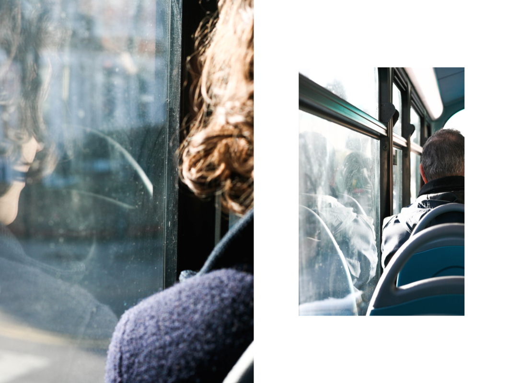
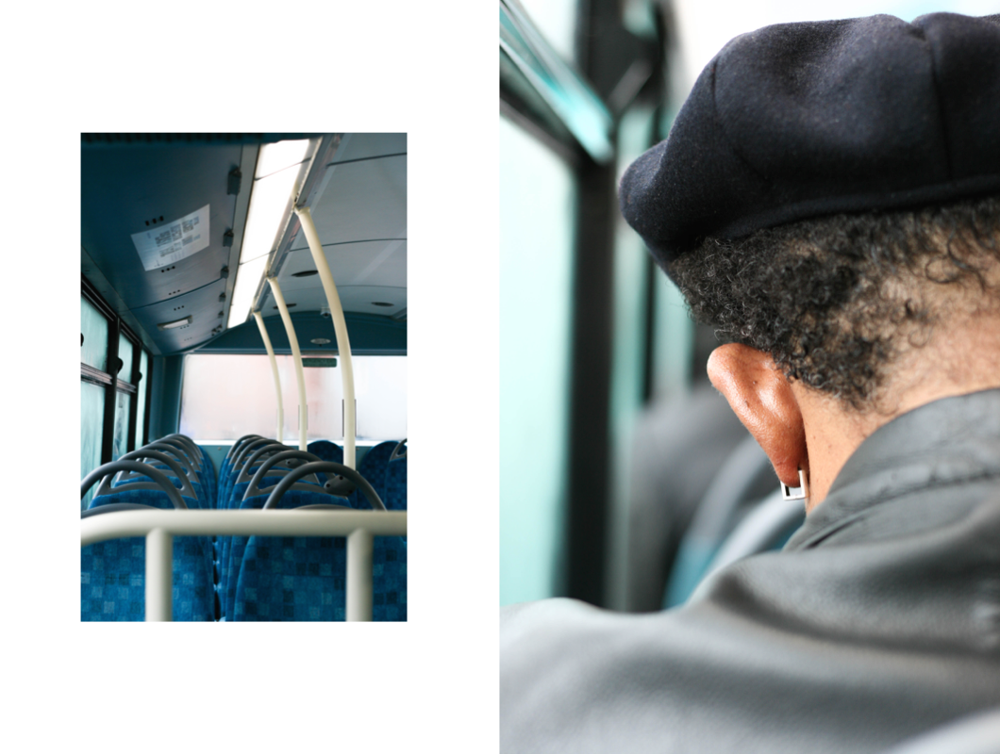

BLIND MOMENTS




When you go the same ways everyday, walk on the same streets, always take the same bus, just to catch the same tube, you slowly get blind. You get blind for what happens around you and what everything looks like. When the newness fades away, the excitement about the city disappears and people can actually see your face because it is not constantly hidden behind your camera, you get stuck. Trying to break out of this horrible thing called routine, I took these pictures in the 106 bus to Finsbury Park, one of those everyday-moments, when I am usually in a hurry, headphones plugged in and I am completely blind for everything and everybody around me. Who would've thought that a bus ride could be that photogenic? The matching colours, the light and the little details... I mean, how could I NOT see this until now? It literally took me six months to take this photos but I think it was worth it, wasn't it?